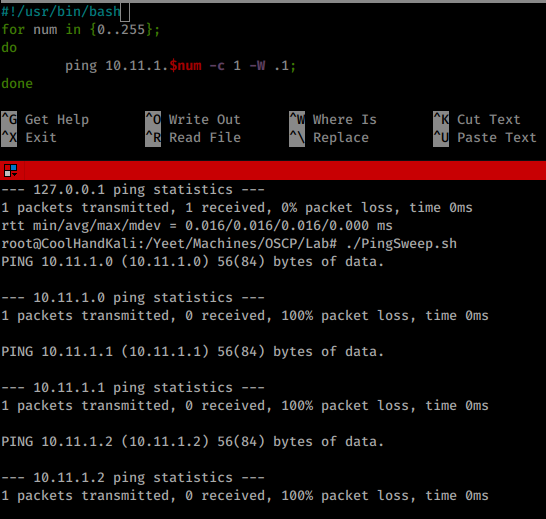
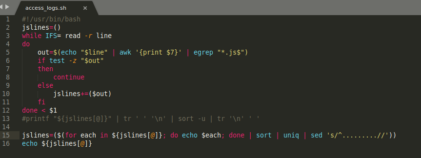
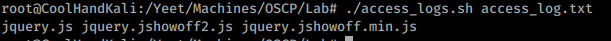
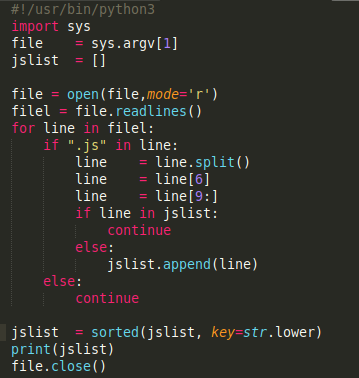
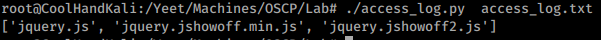

5.7.3.1 Exercises
☐ Research Bash loops and write a short script to perform a ping sweep of your target IP range of 10.11.1.0/24.

☐ Try to do the above exercise with a higher-level scripting language such as Python, Perl, or Ruby.

☐ Use the practical examples in this module to help you create a Bash script that extracts JavaScript files from the access_log.txt file (http://www.offensive-security.com pwkfiles/access_log.txt.gz). Make sure the file names DO NOT include the path, are unique, and are sorted.


☐ Re-write the previous exercise in another language such as Python, Perl, or Ruby.

